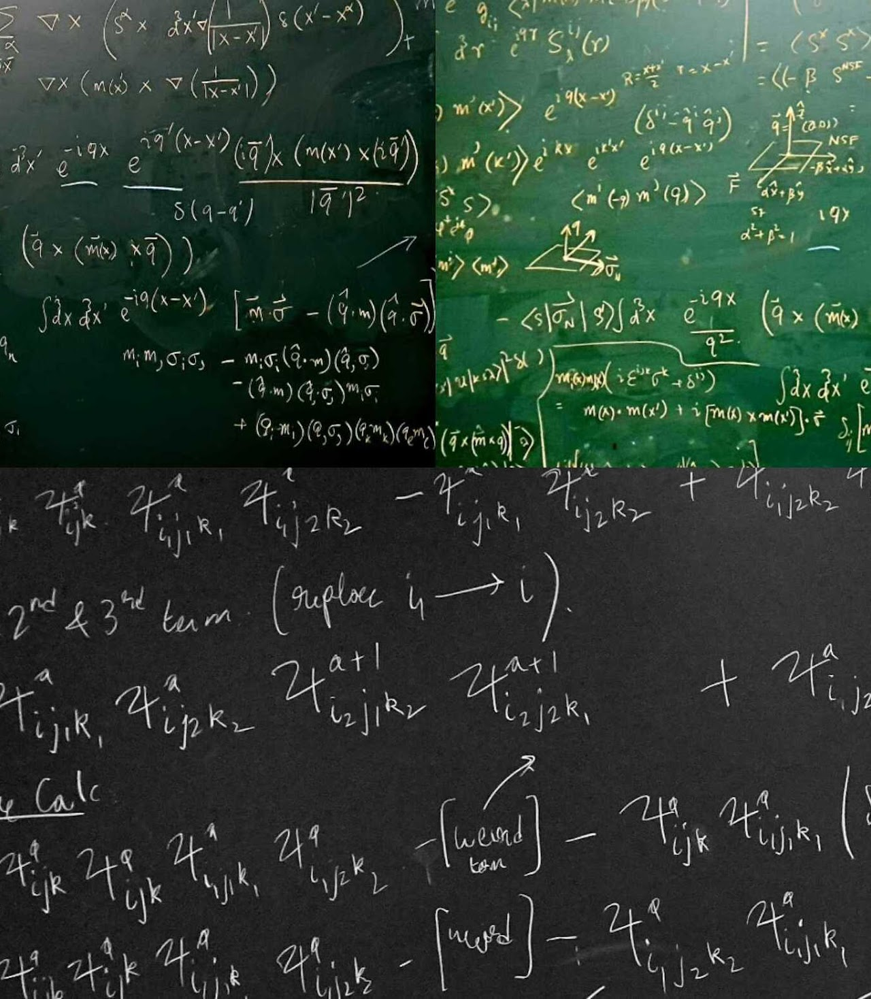

Research
Our research interest is in understanding emergent physics due to the collective behaviour of effective degrees of freedoms appearing at different scales of energy/length in nature. Even though it is understood that the microscopic constituents of matter follow the laws of quantum mechanics, the collective behaviour of a macroscopic number of these constituents can lead to surprising "emergent" phenomena that have seemingly no connection with the properties of its microscopic constituents. For example, under special conditions, many electrons can collectively carry electrical current with no loss of energy, namely the phenomenon of superconductivity. Another such fascinating many-body phenomenon is electron "fractionalisation", where the electron effectively behaves like it's split into pieces by virtue of many-body interactions. My research objective is to understand such novel emergent phenomena in many-body systems and to look for ways of using these understandings to develop technological applications.
Random-singlets are quantum spin liquid-like phases in spin systems where two spins at arbitrary distances can be entangled at low energy. Phenomenological signatures of such phases were extensively studied about four decades ago in doped semiconductors and recently in various disordered magnetic materials. On the theoretical side, such random-singlet states were well studied in disordered one-dimensional spin chains using an analytically tractable strong disorder renormalization group approach, but such an approach is elusive in higher dimensions. However, several different numerical attempts in recent works suggest the formation of emergent disorder-induced local moments at an intermediate energy; which ultimately freeze into a random singlet state at rather lower energies.

In this work, we perform an asymptotically exact calculation to demonstrate such emergent moments and random singlet phenomenology on an SU(2)- invariant version of Kitaev’s integrable model of a honeycomb-lattice spin liquid. Using arbitrary precision numerics and analytical calculations to span the full range of low temperatures, we study the effects of vacancies (dilution by nonmagnetic impurities) and bond (exchange) disorder on the susceptibility. We show the magnetic susceptibility χ(T) of this system has the functional form C/T + D Tα(T) -1 (shown in the figure), where α(T) tends to zero slowly as the temperature T goes to zero. The first term is a Curie tail that represents the emergent response of vacancy-induced spin textures spread over many unit cells: it is an intrinsic feature of the site-diluted system, rather than an extraneous effect arising from isolated free spins. The second term, common to both vacancy and bond disorder, is the response of a random singlet phase.
We argue our results may hold in the presence of some experimentally relevant perturbations to the model that we studied, thus this may lead to unexplored variants of cooperative physics of the low energy emergent degrees of freedom in a disordered quantum magnet.